Monash Performing Arts Centre (MPAC)
The Waiting Room Arts Company
Melbourne Design Week '25

Another Studio
Unstitch
Lead Designer
exhibition design
digital fabrication
metalworking
workshop facilitation
user research
digital fabrication
metalworking
workshop facilitation
user research
Challenge
Textile recovery is often inaccessible to the public, attributed to little understanding of material value and entry for participation in the circular economy.
Solution
An interlocking textile system created with scalable upcycling production, and workshop methodology that enables the community to create useful, modular objects without sewing while learning about circular design.
Timeline
2025
JFMAMJJASOND
Tile making & testing
×
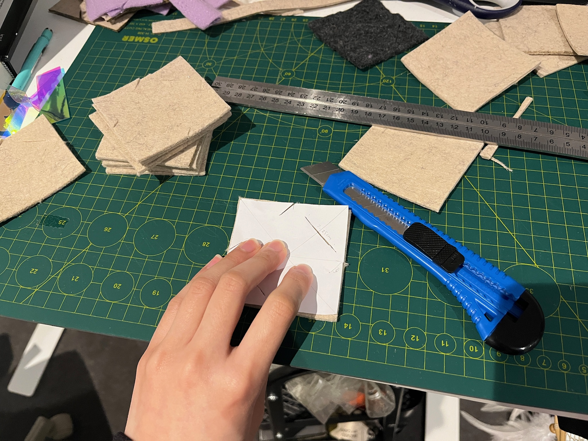
×
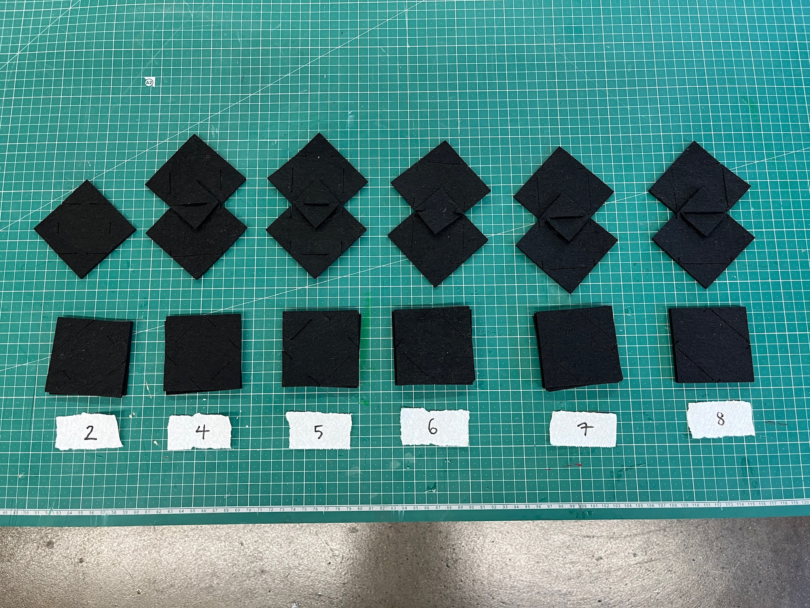
×
joint strength testing
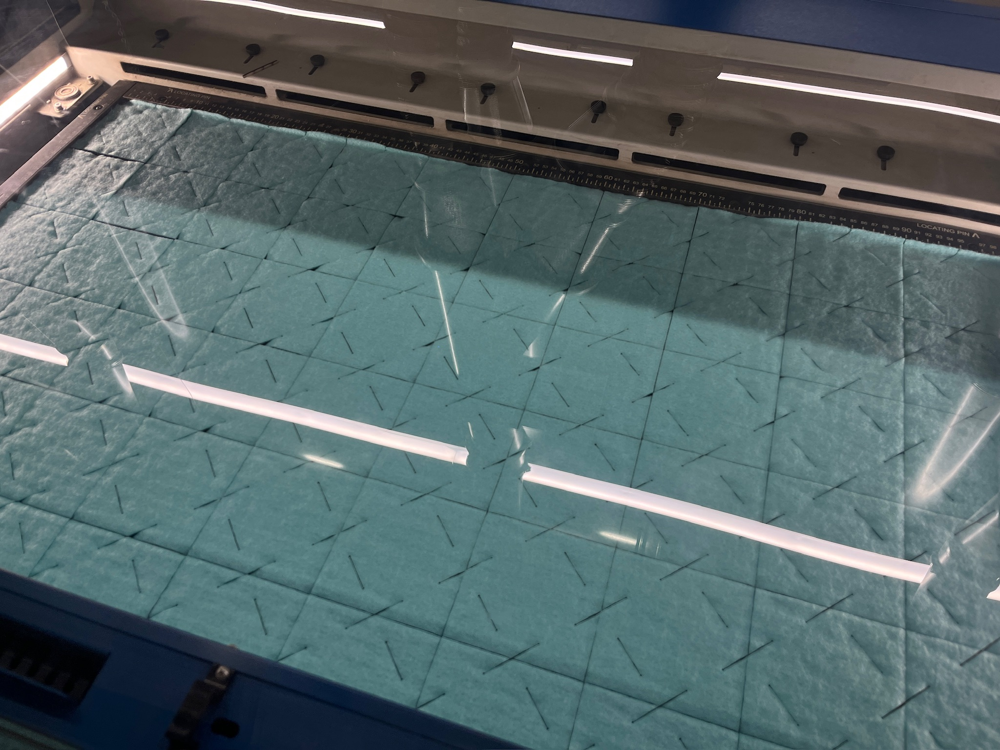
×
Workshop & feedback
×
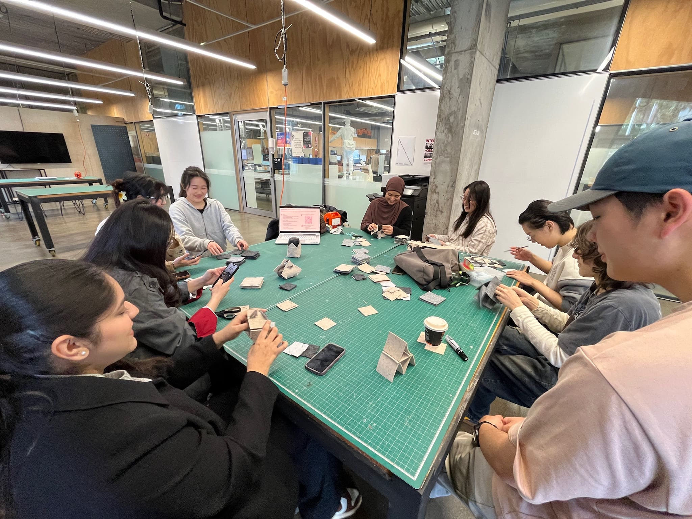
×
workshop
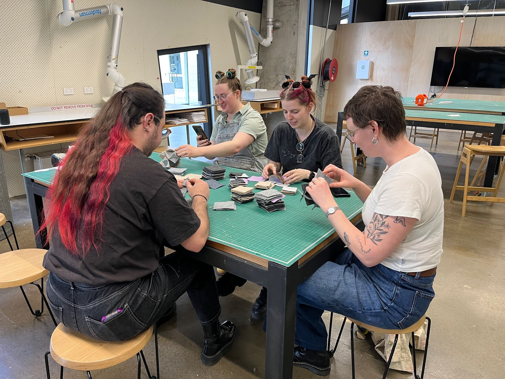
×
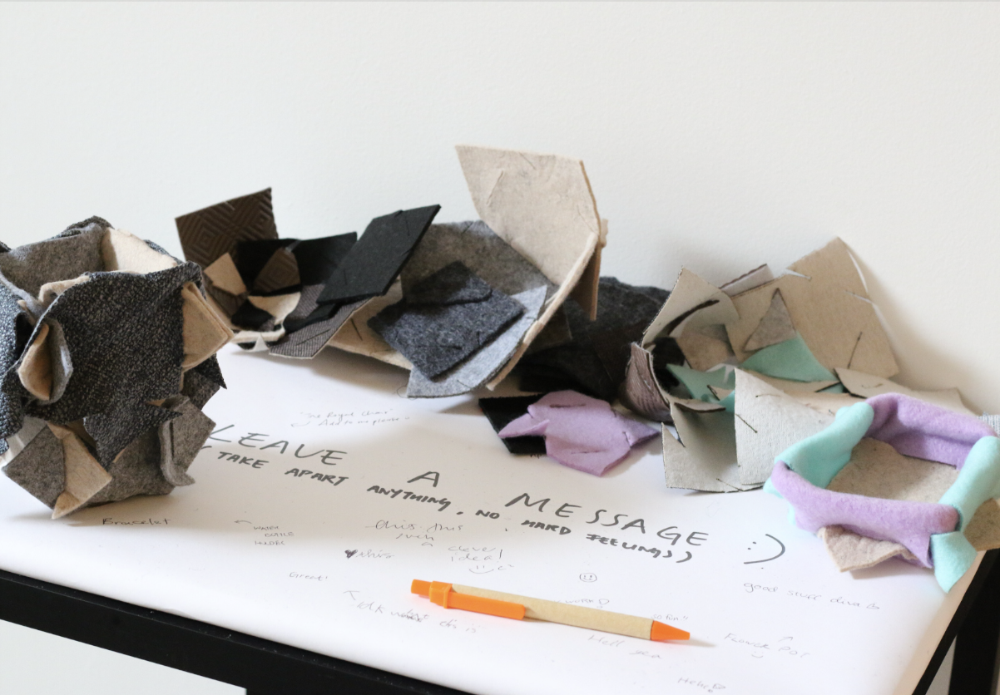
×
die fabrication for scalable upcycling
×
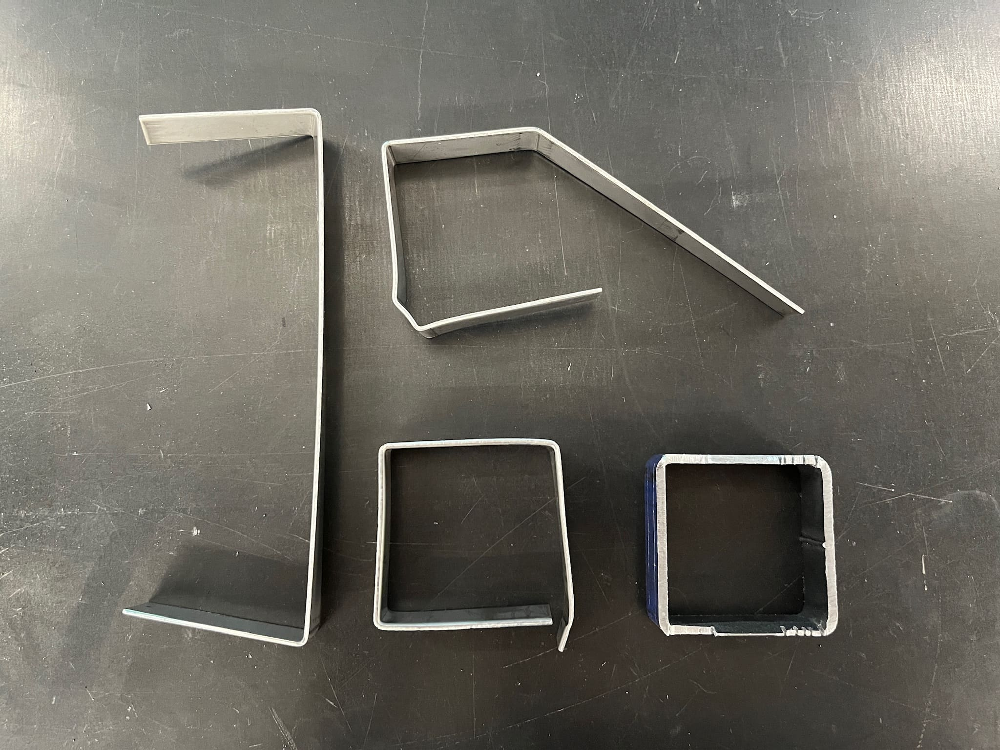
×
metalworking prototypes
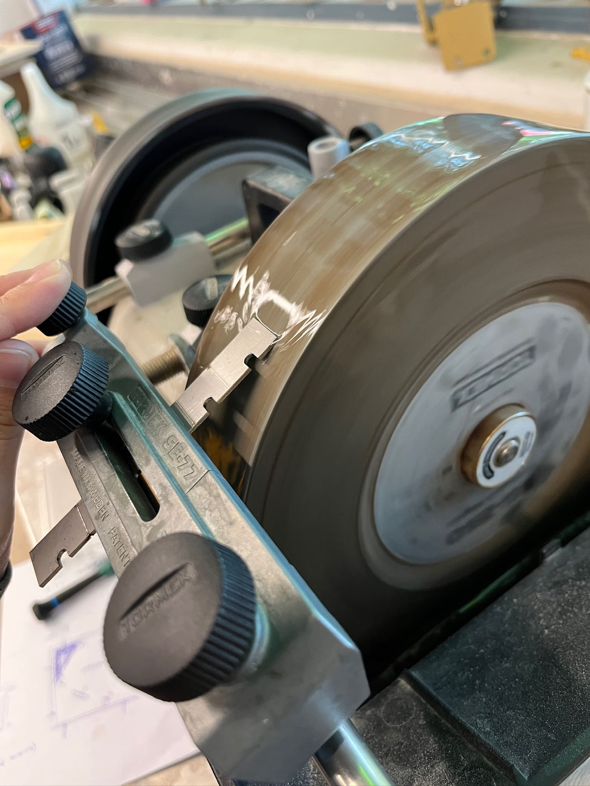
×
grinding custom blades
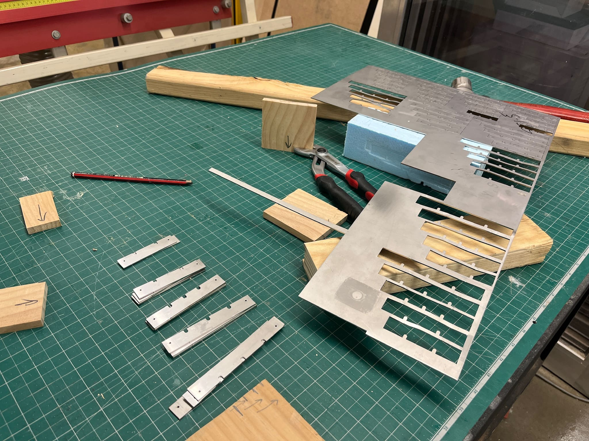
×
metal laser cut blades
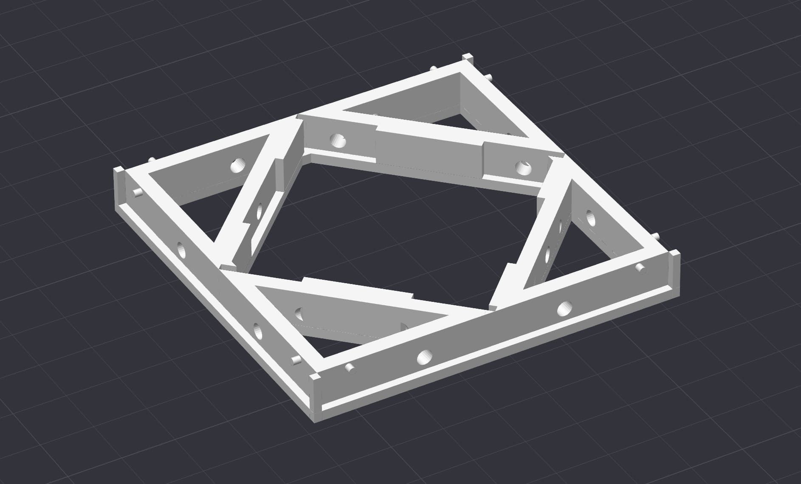
×
die holder
exhibition installation
×
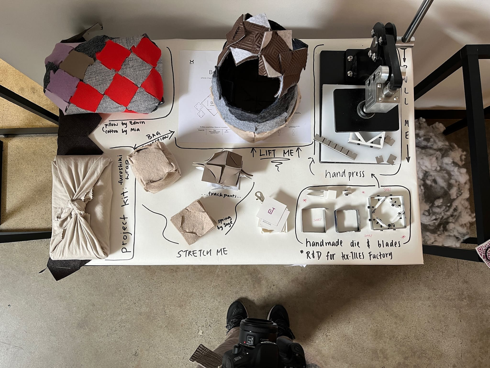
×
unstitch artefacts and custom die
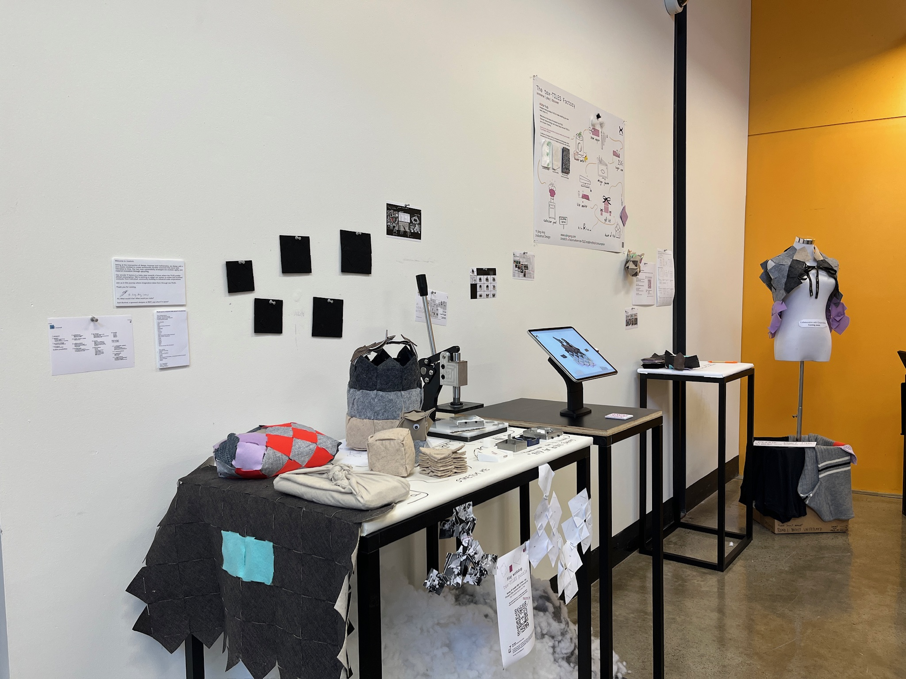
×
exhibition set up
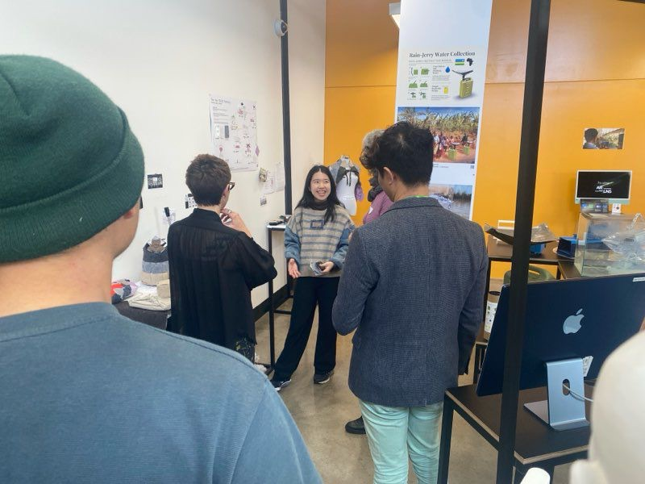
×
presenting to public